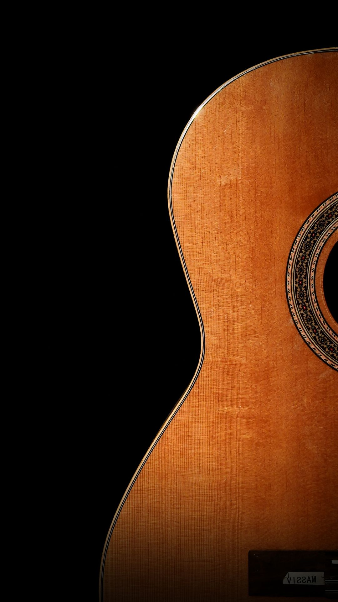

Conteúdo para quem ama música, cultura e novidades
Aqui você encontra conteúdos, dicas, produtos e experiências relacionadas ao universo musical.
Este site reúne projetos, conteúdos e recomendações desenvolvidos a partir da minha experiência como músico e professor. Da pesquisa sobre gravações históricas ao ensino de instrumentos de corda, viola caipira, violão, guitarra e cavaquinho.
Você também encontra uma seleção de produtos e ofertas do universo musical, com foco em encontrar os melhores preços.

Agende já sua aula experimental grátis!
Desenvolva sua musicalidade com aulas personalizadas, que unem prática e compreensão musical. Conhecimento se constrói com planejamento. Para tocar com autonomia e confiança clique no botão abaixo.
O que diferencia minhas aulas?
- Ensino personalizado: conteúdo e atividades adaptados aos seus objetivos e às suas dificuldades.
- Prática com compreensão: aprenda não apenas como tocar, mas também como a música funciona.
- Desenvolvimento progressivo: uma aprendizagem organizada, respeitando seu nível e sua evolução.
- Experiência musical ampla: integração entre técnica, teoria, repertório e aplicação prática.
- Mais de 15 anos de experiência: ensino fundamentado na prática musical e na vivência em diferentes contextos artísticos e educacionais.
Aulas para iniciantes e alunos que desejam aprofundar seus conhecimentos, com opções presenciais e on-line.
Vamos conversar sobre seus objetivos musicais?
Entre em contato para conhecer as aulas e encontrar a melhor opção para você.
Acompanhe os canais e projetos:

Faça parte da comunidade
Entre no canal do WhatsApp e acompanhe as novidades!
Canal WhatsApp - Radar Musical